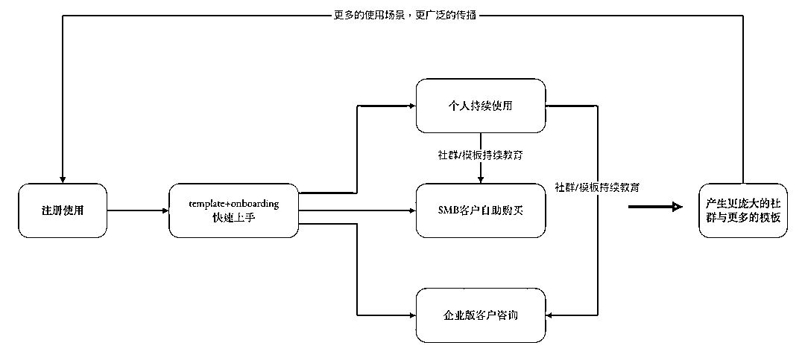
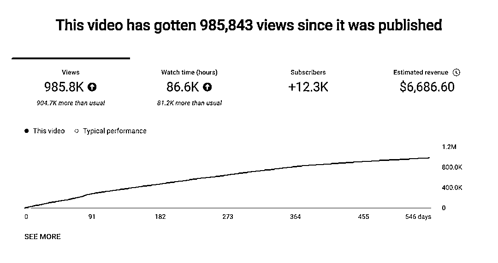
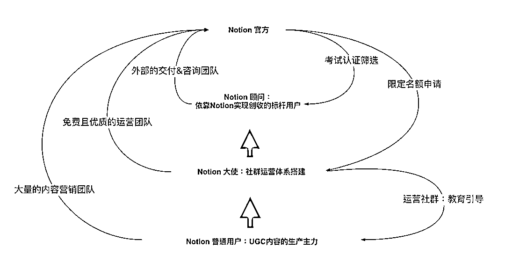
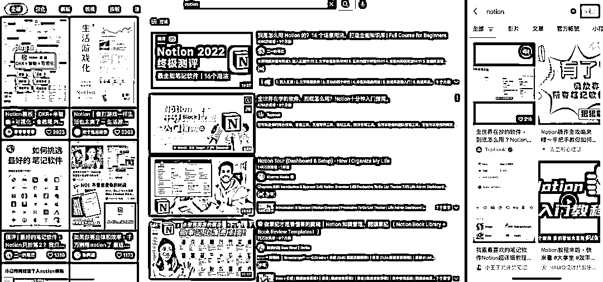
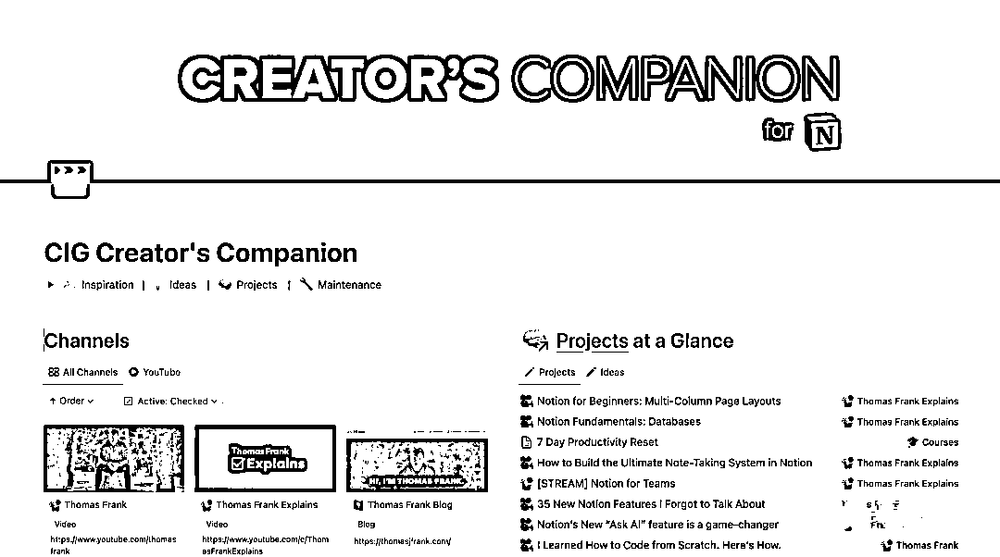
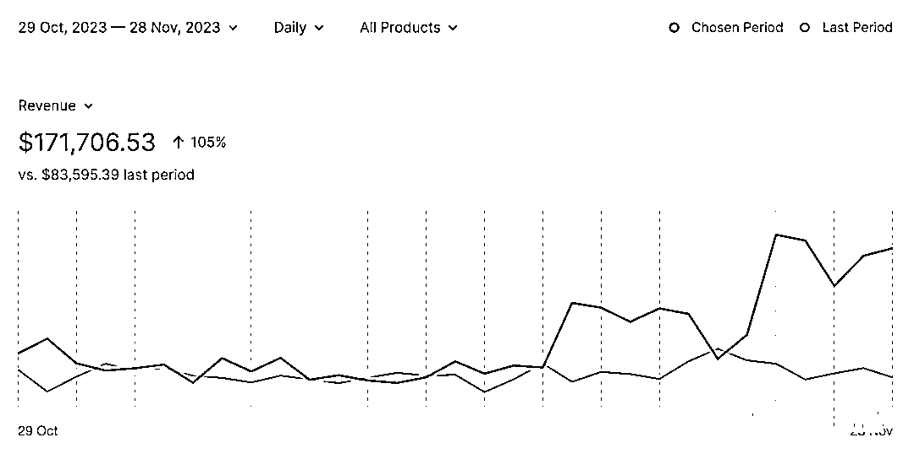
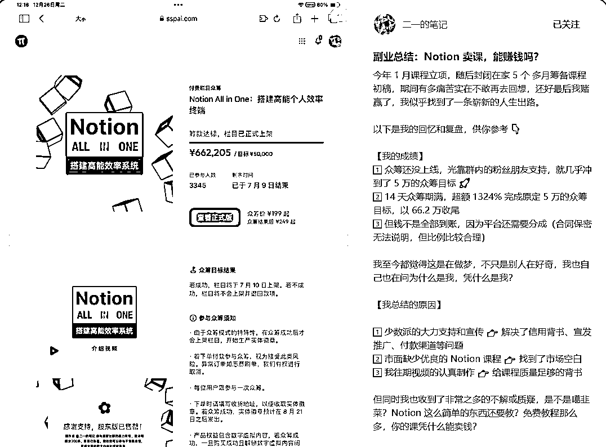

来源：https://zx5eujk7gcw.feishu.cn/docx/ZRTCdzsp9olw1jxaMi2c5yVZnsf
大家好，我是远行，一个刚刚进入生财，开始学习了解赚钱能力的新人。今天我就以一个新人的视角，来拆解一下这个Notion模板项目。
在进入生财之前，我压根没有听说过Notion，甚至不知道它是个什么东西。但为什么会选择这个风向标来作为拆解对象呢？因为好奇。对，我就是因为好奇，这个风向标的开幕雷击关键词有三个：模板、100万美元、资料整理变现。
对，没错。吸引我的就是最后一个关键词：资料整理变现。
第一次发现，靠这个能力也能变现。试问，现在哪个IT互联网公司的人，不会整理资料呢？所以，我想研究一下。
不查不知道，一查吓一跳。还真被我挖到一个哥们儿，2年靠Notion模板，变现了210万美元。他的名字叫托马斯·弗兰克。
好了，闲话少叙，进入正题。
以下是学习了Hedy大佬的拆解分享，我觉得她的这个拆解模板非常适合我，所以直接拿来用了（捂脸）：
✅赛道前景概述
✅如何起号（YouTube）
✅如何引流（YouTube）
✅产品形式
✅变现分析
✅利润怎么核算？
✅项目如何做&如何放大？
接下来我们会以《托马斯·弗兰克 靠卖Notion模版2年赚了210万美元项目》为例，为大家进行拆解。
首先，我们得知道Notion是什么，或许很多生财大佬已经知道了，但是我还是要在这里给同为新人的圈友们普及一下。大佬们可以跳过了。
Notion 是一款强大的在线协作工具，它将笔记、任务管理和知识库相结合，为用户提供了一个高度可定制和灵活使用的工作平台。
下面的介绍是网络上给出的通用介绍，内容太多。我觉得Notion官网的介绍，更清晰点：
“Notion 官网首页，在面向个人使用的场景上，介绍了6大主要使用场景：记笔记、一站式记录平台、任务管理、写文章、目标管理与建立个人网站。”
就从这句话的介绍来看，我觉得就很强大了。为什么？
上述6大场景中，单说2个：一站式记录平台和建立个人网站。
这两个场景，在过去，是需要组建一个至少3-5人的开发团队，才能搞定的，如果你想自己做，还得学习非常多的网站开发搭建技术。
扎心的是，即使你学会了，你搭建的，也不一定有一个技术小白在Notion上搭建的个人站好！
Notion主打的是All-in-one，把所有的信息化处理工作都放到一个平台上来完成。
一、应用概述
Notion是一款新兴的在线笔记应用，旨在为用户提供一个集中式的平台来整理、共享和协作各类信息。该应用融合了传统笔记应用的基础功能与现代团队协作工具的特性，适用于个人、学生、以及企业团队等多种用户群体。
二、功能特点
三、优势
四、不足之处
所以，Notion初看之下，好像就跟飞书、腾讯文档、Keynote等等差不多？不不，如果是这样，那它的模板也就不值钱了。且看下面的总结。
这就要说一下Notion模板项目到底是干什么的，到底属于什么赛道：
总结起来，Notion就是一个能够帮助个人、企业和团队提高创造价值效率的工具平台。因为它的自由定制特性，所以能够衍生出各种能力。
但一个硬币总有两面：正是因为它的高度自由定制的特性，Notion的使用成本很高，尤其是新用户，完全不知道该从何下手，它的学习成本很高，因此，就催生了一个很细分的赛道：Notion工具培训赛道。属于培训赛道。
我暂时将Notion模板项目划分为Notion工具培训赛道里，或者你也可以把它理解为知识分享赛道。
基于前面的介绍，我们知道了这就是一个工作效率提升类的工具平台。讨论赛道前景，主要要看这个赛道的受众群体都是什么样的？规模有多大？
目标用户（个人）
基于 Notion 的面向个人的应用场景，在C端市场上，其潜在用户是除没有能力进行文字记录的儿童之外的所有人类个体。
但是，因为思考成本的存在，不是人人都有动力去进行各种文字记录与任务管理。所以，使用 Notion 的人，一定有提高生活效率、实现自我成长的动力，并且能上手使用、有时间进行思考记录。因此，按照这个条件，无非就2类人群：
目标用户（企业）
Notion 的主要企业端客户大多是小规模企业，包括单独的小企业和大企业内的小团队小部门。
面向企业市场的 Notion，属于工具类 SaaS，定位是内容协作一体化平台，在强大的无代码能力支撑下，可提供企业知识库、项目管理、文档协作、自动化流程等除IM通讯与专业垂直服务外的多种服务。
与个人工具类似，作为企业工具的 Notion，提供的价值仍然是all in one——让企业在办公中减少软件的切换，用尽可能少的软件完成更高效的协作，实现内容的快速流动，提高企业协同效率。
账号：托马斯·弗兰克 靠卖Notion模版赚了210万美元
类目：Notion模板
带货形式：YouTube视频分享
选择该账号拆解的原因：
这个博主赚钱了，并且有了持续收入。
他是怎么变现的：
因为存在个人与企业两类用户，所以 Notion 可以支持的场景也可以分为2大类：个人内容管理与企业协同。
这里面，企业协同实际是Notion的主要盈利版块，相对而言，个人用户所贡献的利润并不占主要部分。
这里给出一个调研数据，来自Gartner:
移动互联网的普及，加上疫情的催化，使办公移动化、数字化程度不断提高，协同办公行业也在快速发展。从2019年起，协同行业的全球市场规模年增长率预计将达到约10%，在2024年达到481亿美元；且国内市场发展将更为迅速，年增长率预计将达到23%。
这里就要说到国内市场了，现在大家看到的有飞书等可以使用，是不是觉得很方便？但是如果你用过了Notion，那么你会发现这俩不在一个层级上。
飞书，蓝湖这些可能还只是一个工具，可能它们也在向Notion看齐，但目前还是有很大差距的。
Notion的优势就在于，它的天花板高，它像一个积木，可以搭建出无限可能。
但即使是这样：
国内对协同办公的投资也从2020年的82亿暴涨到2021年的243亿（数据来源：it桔子），且其中也有以蓝湖为代表的百亿独角兽公司诞生。
Notion所在的大赛道，追根溯源，其实就是几年前非常火的【SaaS】,也即是无代码平台。通过它的高度灵活性，形成All-in-one的协作平台。
它与其它类似的无代码协作平台之间比，优势是什么？
无代码提供的高度灵活性，形成 all-in-one 的协作平台，就是 Notion 最大的优势。
具体说是2点：多场景的支持与业务数据的互通。
1、多场景的支持
是指通过使用 Notion，不仅能满足最通用的文档协同场景，而且能够搭建出如 CRM、HRM、项目看板等工具满足更多的垂直场景。
这一点对大企业没有吸引力，因为它们都会单独采购或者开发适合自己的类似工具。
但是对于小企业、小团队而言，一个CRM、HRM的采购和开发成本，就可以让这个企业破产。
Notion解决了这个使用难题。
2、业务数据互通
通过 Notion 搭建出的诸如销售管理、采购管理、库存管理等工具，能够实现数据之间的任意引用，而不用再像以往单独购买软件时，还需要单独做接口，实现内部数据的互通，而这个过程带来的开发成本和实施成本都不小。但是，如果你使用了 Notion，这些成本都将降低为0。
那么它就没有劣势吗？当然有，所谓“成也萧何败萧何”，Notion的优势是灵活，它的劣势也是灵活。虽然对于 Notion 自身来说，服务小B客户，交付部署时间快、成本低，服务标准化程度高，盈利也更加容易，但从另一个角度来看，优劣也是劣势，配置自由度高、应用场景广带来的劣势便是：
到底普通人怎么赚钱？
看到这里，你大概能看明白了，Notion上，我们能赚钱的点到底是什么了吧？
对，就利用它的：【交付咨询能力差】这个缺点。
这也是为什么，现在内外网上，有如此多的博主可以利用一套模板，或者各种Notion课程赚钱的原因。
通过教授人们如何使用Notion并销售Notion的模板，以及在YouTube上开设关注生产力的频道，托马斯就是这样，他的两个旗舰模板——"Ultimate Brain"和"Creator's Companion"——在大约两年的时间里创造了210万美元的销售额。
那么他是怎么做的呢？
托马斯最开始并不是做notion模板项目的，他原本是只是一个普通的视频博主。从2018年开始使用Notion作为自己的自媒体效率提升工具。此时，托马斯还是一个完全的Notion新手，只是将Notion作为一个TODO类的工具在使用。
直到2020年，他开始将Notion引入自己的团队，作为协作效率办公工具。但这时候，他发现很多人都还不知道Notion，更不知道如何使用Notion。
因为托马斯在前期使用时，储存了一套模板，可以通过分享，让其他人快速的使用起来。但此时托马斯的Notion技能并不熟练。他的模板也并不完善。
从2020年开始，托马斯开始有意识地学习和优化自己地Notion模板，针对性的去解决一些生产力的问题。
1、制作入门使用视频
托马斯发现竟然还有很多人连Notion的基础操作都不会时，就录制了一个入门使用视频。原本他并没有在意这个视频，但就是这个视频，让他真正意识到Notion模板的重要性。
2、在视频中分享了第一版的Notion模板
因为托马斯录制了第一个入门视频后，并将自己正在使用的Notion模板分享链接放在了视频下方，这个是免费的。但却因为这样一个动作，视频突然就火了，光这个视频的广告收入，第一个月就达到2000+美元。
这让他看到了商机。
起号其实就是这么简单，并没有专门的包装，只是做了一期使用视频分享，附上了免费的模板链接。
不过，这里对我们而言，可能不具备可参考性，因为现在大多数平台，是不能这么直白的引流的。
其实在前面也有提到，就是免费。
但有位产品大佬，将Notion的模式总结为PLG增长策略。
定义：
通过提供产品的免费使用，并进行终端用户生态的运营，凭借良好的产品力，实现从下而上由终端用户驱动企业采购的B端产品增长策略。

托马斯就是用一个免费的45分钟视频，深入的介绍了他的模板“Ultimate Brain”每一个部分的功能后，就获得了第一批用户：

上图是这位大佬梳理的简略版 Notion 增长模型，结合 PLG 的定义，大部分 Notion 用户的使用流程大概是这样的：
就这样，循环往复，Notion 的 PLG 增长飞轮就完成了搭建。
关于 Notion PLG 模型的成功，主要的核心原因，其实还是在于定位。
它的定位就决定了它非常适合 PLG 策略，主要体现在以下3点：
从我这样的观察来看，Notion其实更像是一个具有社交属性的【SaaS】低代码开发平台。
是的，当我得出这个结论时，也吓了自己一跳。但是看看正在使用的飞书，它不也是在朝这方面去努力吗？
关于产品形式，我用下面这张图来展示吧：

Notion官方的产品是这个低代码工具应用平台，但它同时给普通用户提供了一个能力：UGC内容生产能力。
这就好比小红书、抖音这些社交媒体平台，实际上平台方就是搭建了一个舞台，剩下的事情都是用户在做：生产内容。
对于Notion而言，它的产品就是Notion模板。
每个人，每个团队，每个企业，他们的需求、痛点、业务内容都不一样，但是又有很多类似的，共通的地方。
所以如果有人能够制作一套模板，并将这套模板推广出去，它总能适配到对应的用户。
这是不是跟小红书、抖音、视频号很像？

那我们再回到托马斯这里。
托马斯实际上只是Notion这个内容生产平台里的一个“博主”而已，他通过利用Notion解决了自己的痛点和需求，从而想到，自己的模板是不是可以帮助别人解决同样的痛点和需求？
对，就是这么简单一个思路：
Notion变现的方式主要有2大类：
个人用户，在Notion上的主要变现方式就是卖模板，将自己做好的一套Notion模板设置付费，分享给其他人去使用。用的人越多，赚的钱越多。
托马斯现在主要有两个模板产品，而且他从始至终都在卖这两套模板，卖了两年，月均收入12万美金：

卖教程，就不多说了，跟其他社交媒体上卖课，应该是一个道理。星球上太多大佬讲了。我就不在此赘述了。
因为Notion的模式就是，他们官方重点服务的是B端用户，大家可以再返回去看那个【产品形式的图】，所以注定是无法满足大量小团队和个人用户的咨询需求的。所以，对Notion有一定了解后，就可以为这部分人群提供咨询服务和售后支持服务。
就比如，为买了自己的模板的人做服务咨询、售后更新升级等等。
这部分，我实在不知道怎么写了。上面这个是托马斯的收入情况。这里附上一张图，这是他2023年11月，一个月的收入：17万美金。

具体的利润核算，我暂时还做不了。时间太紧了。这一期，就先拆解这么多吧。加入生财第一次写这么长的帖子，有点乱七八糟，不知所云吧。各位圈友，原谅我这赶作业赶出来的结果吧。轻拍（求原谅）。
后面有时间了，我再来补充更多内容。
这里补充小红书上一个案例，这位博主，通过众筹的方式，14天，什么都没有的情况下，众筹了66.2万元！对于搞钱小白的我来说，简直不敢想！

好了，剩下的教程之类的资料，网上普天盖地，我就当时自己学习记录下这些内容在这里了。如果有写错或者不对的地方，请大家多多指教，但是轻点拍哈！！！！